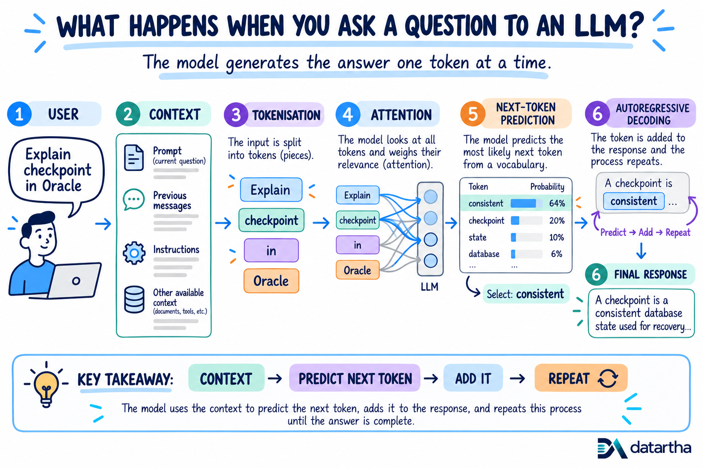
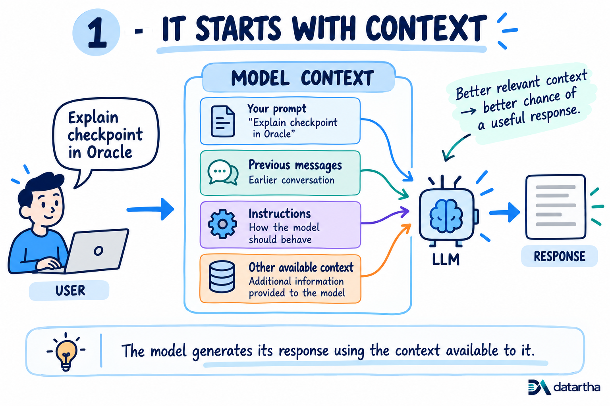
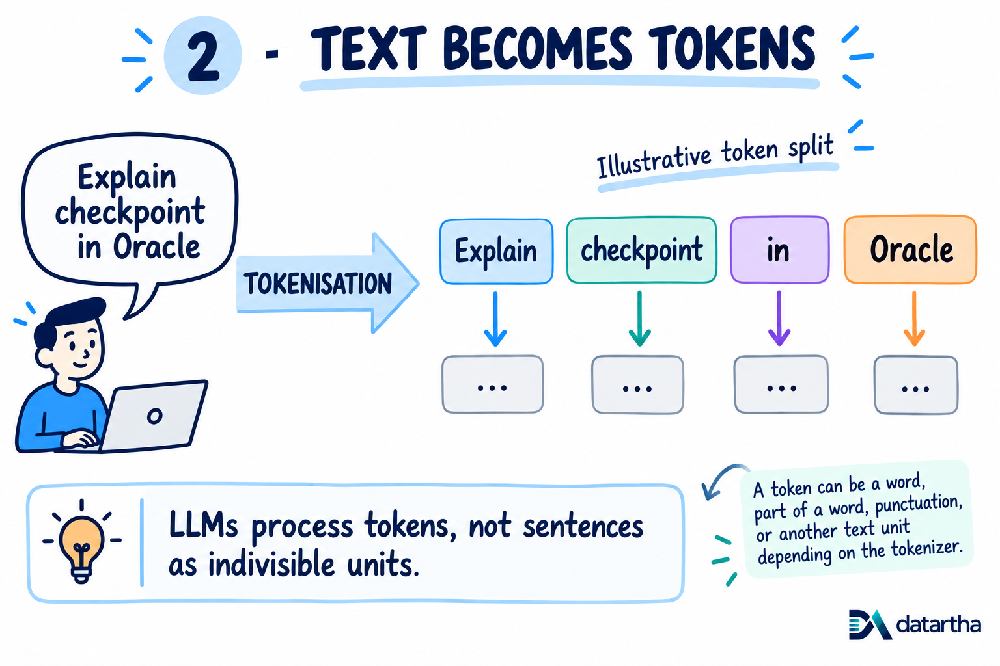
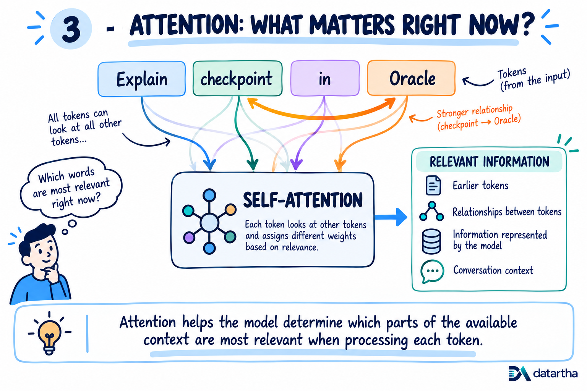

What happens when you ask an LLM a question? Context, tokens and attention
Before an LLM can generate an answer, it must assemble the available context, turn text into tokens and work out which parts matter most.
1. What happens when you ask an LLM a question?
When we type a question into an LLM, it looks like a simple question-and-answer process. Behind the scenes, the model goes through several steps before we see the response.
At a high level, it takes the available context, breaks the text into tokens, processes those tokens and starts predicting what should come next. The important part is this: the full answer is not created at once. It is built one token at a time.

2. It starts with context
Before the model can generate an answer, it needs context. This includes your question, previous messages in the conversation, instructions given to the model and any other information provided to it.
That question becomes part of the context the model uses to generate its answer. Simply put, context is the information the model has available while answering you.

3. Text becomes tokens
LLMs do not work directly with sentences in the same way we read them. The text is first broken into smaller pieces called tokens.
The exact split depends on the tokenizer used by the model. A token can be a full word, part of a word, punctuation or another small piece of text. These tokens are what the model processes.

4. Attention helps connect the context
Now the model needs to understand how the tokens relate to each other. This is where attention plays an important role. In “Explain checkpoint in Oracle,” the words “checkpoint” and “Oracle” are closely related to what the user is asking.
Attention helps the model assign different importance to different parts of the available context while processing the text. This helps it use the right information at the right time.

Part 1 takeaway: Context, tokens and attention prepare the model to generate - but the answer has not been written yet. Part 2 follows the prediction loop that builds it.